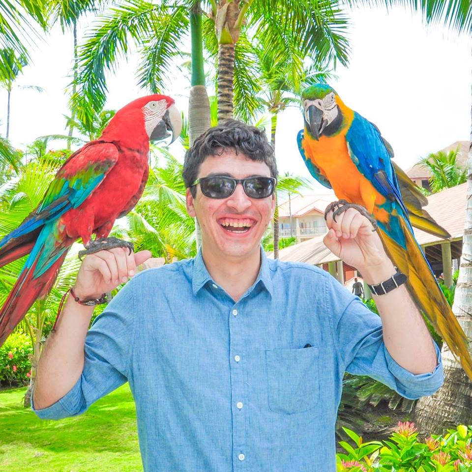

About Me

My name is Ryan Franco. I was born in Ocean Township, New Jersey. Before going into the Rutgers Coding Bootcamp, I had done numerous things in my life. I went to college at Ursinus which is in Collegeville, Pennsylvania. There, I got a bachelor's degree in History and American Studies. I did some work study while there, including working with the Athletic Trainers and I even led a handful of charity events to benefit the Leukemia and Lymphoma Society. Afterwards, I was initially going to go to law school, but I changed my mind in the last year in order to support individuals with disabilities one on one. It became extremely stressful for me, and I eventually had to leave. That was when my attention turned to coding.
I was initially unsure about coding. I once tried it out freshman year in high school, a class on C++, and was apprehensive about doing it again. However, after some persuasion and talking to numerous family members and friends, I decided to give it another go. Web Development is actually really fun, and I have learned many new styles in the last few months. I am skilled in HTML5, CSS, Javascript, JQuery, AJAX requests, Firebase, NodeJS, MySQL, Express, HandlebarsJS, Sequelize, MongoDB, and ReactJS, among with many other applications which I am continuously working on a daily basis.